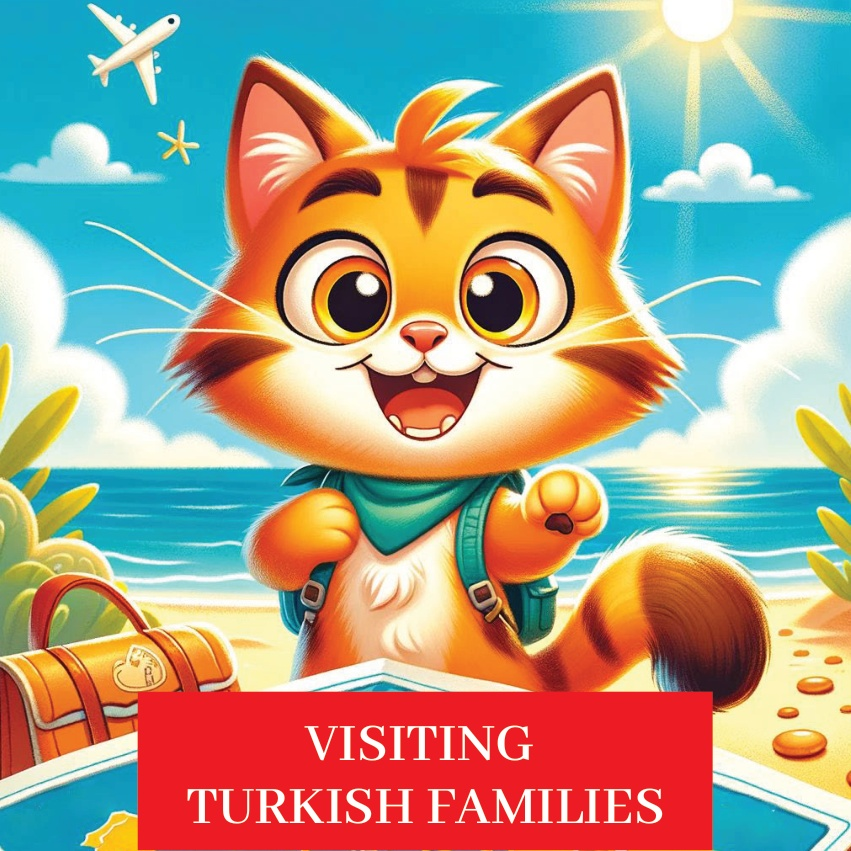
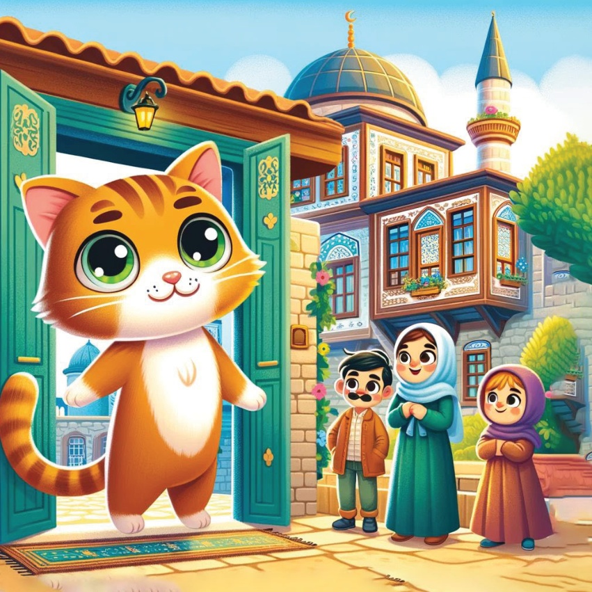
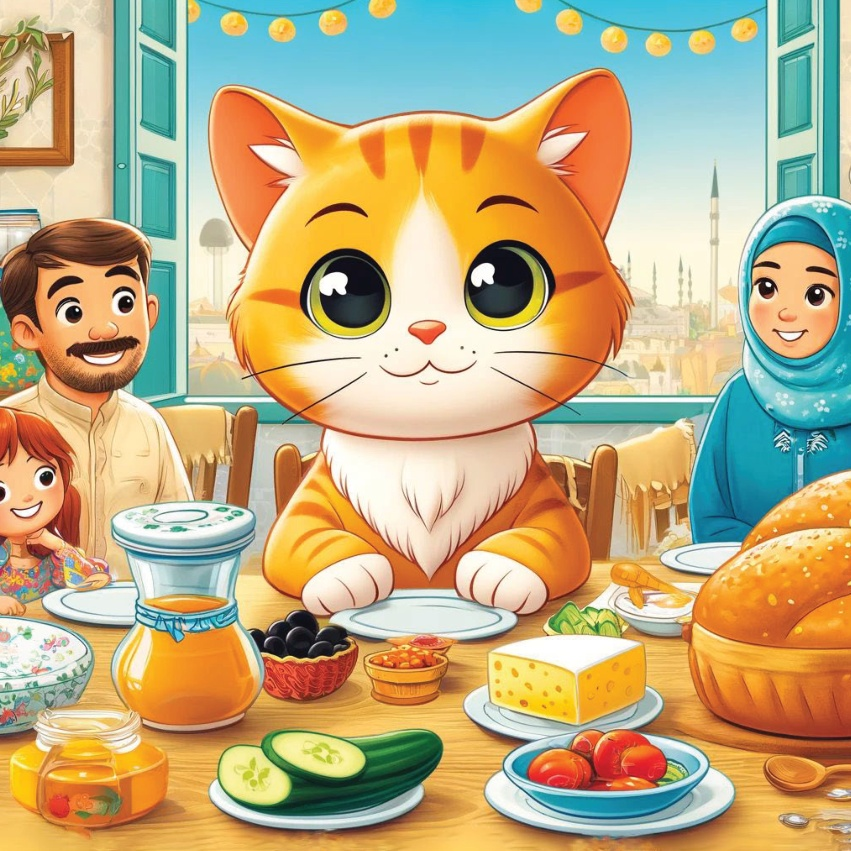
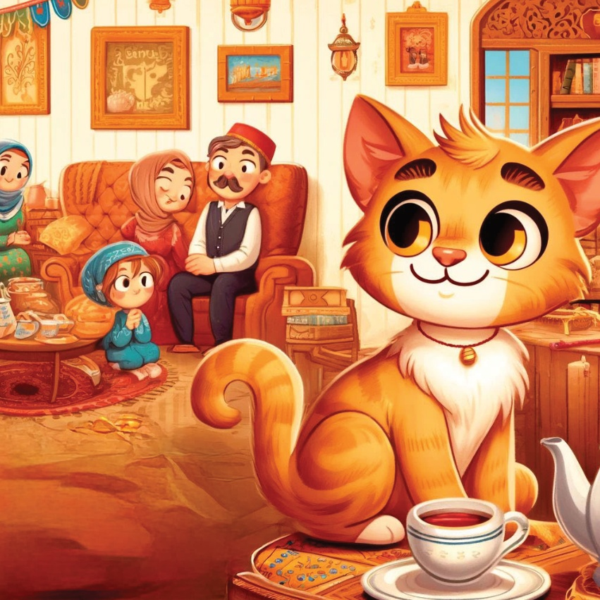
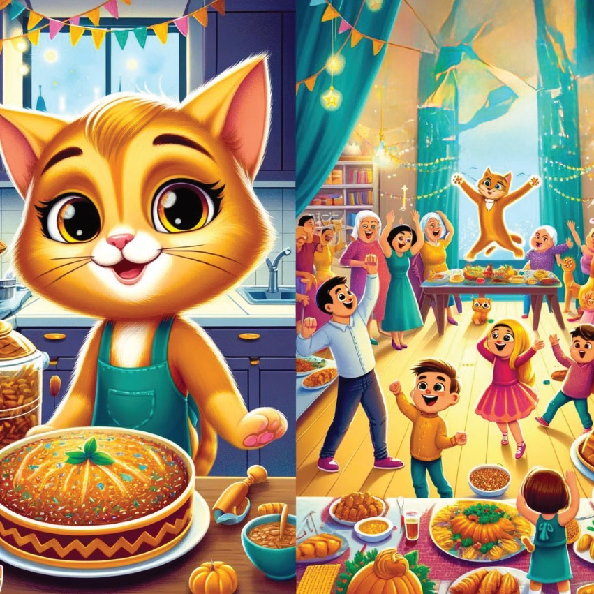
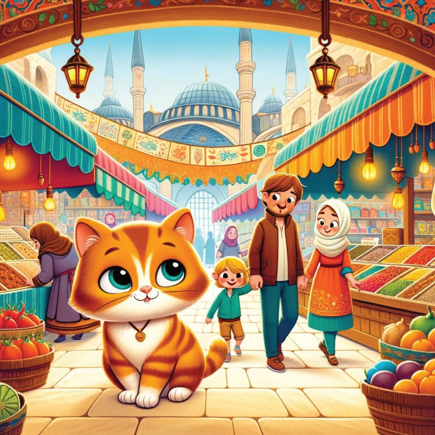
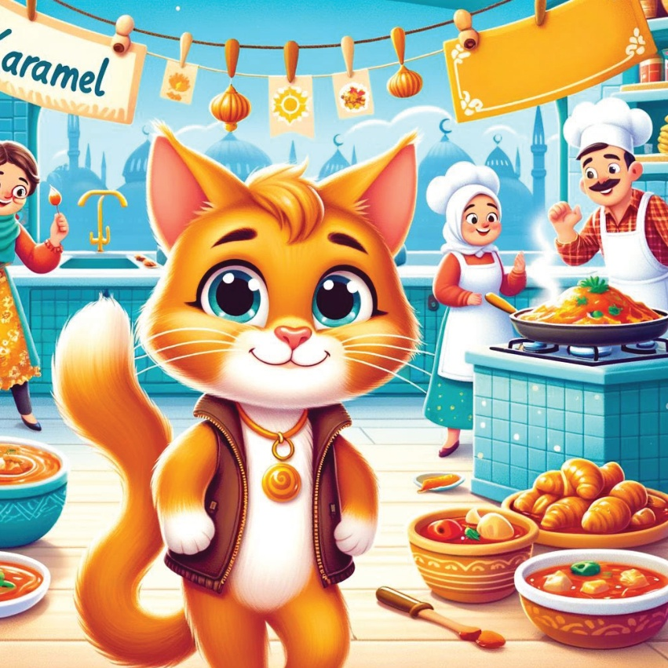
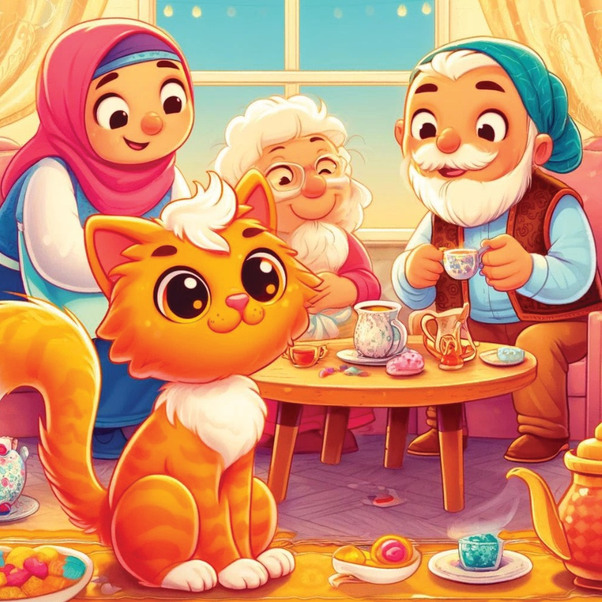
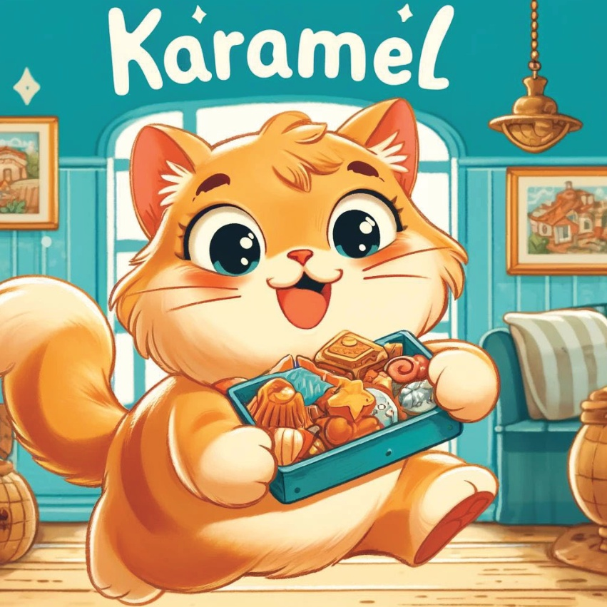
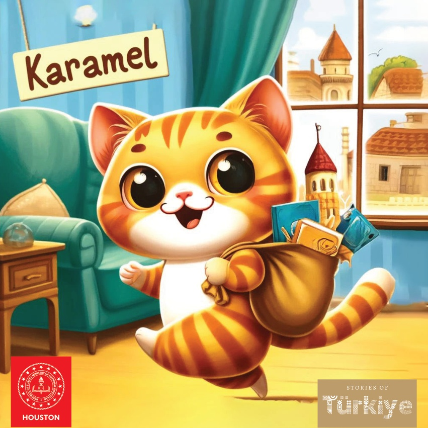

1

2

3
Karamel adlı qiziqviendoq mingizbaqqa Türkiye mehmanlariga bir sayohat qilishni rejalashtirdi. U turli bir türk oilasini ko'rish va ularning hayotini, bayramlarini va birga o'tgan vaqtlarini bilmoqchi edi. Qalbida g'ayrat bilan yangi bir অভিযানga yo'l qoldı.
4
5
Karamel turkiston hududidagi kichik qishloqqa joylashgan chuchuk oila uyiga keldi. U oila a'zolari unga juda qulay gushti bilan qushdi va Karamelni ularning kundalik ishlariga va xususan bayramlariga uchrashishga taklif qildi.
6

7
Kahvaltı Zamanı.
Karamel ilk olarak geleneksel bir Türk kahvaltısı yaşadı. Masa zeytin, peynir, domates, salatalık, bal ve taze fırınlanmış ekmek gibi lezzetli yiyeceklerle doluydu. Karamel yemeğin tadını çıkardı ve sıcak sohbetlerden keyif aldı.
8

9
Aile buluşması Sonra, Karamel aileye oturma odasında katıldı. Orada herkes sohbet etti, çay içti ve birbiriyle vakit geçirdi. Aile hikayeler paylaştı ve geleneksel Türk müziği çaldı.
10

11
O'sha kechki oila katta mehmonlik bilan xushurinish qildi. Karamel ota-onalar yemuq-ichimolni tayyorlashda va stulni tuzlashda yordam berdi. Bu bayram rang-renq raqslar, qo'shiqlar va ko'p hayotli kulushlar bilan o'tdi.
12

13
Bahor paydon bo'lgach, Karamel oila bilan yerel bozarga yangi mevalar va sabzalar sotib kelishdi. U rang-renk tayoqchilar va yangi meva-sabzalar, ilakalar, қўl bilan ishlangan narsalar ko'purligiga juda qiziqdi.
14

15
Evda Karamel oilshodiga oilchilar oilishga yordam berdi. U dolma, kabab va baklava kabi odatdagi turkish taomlarini yasashni bilib oldi. Buva-xalaqona xonasi chiroyli hidlar bilan to'la bo'lup turardi.
16

17
Axshom O‘chchi Vaqti.
Shom vaqti oila o‘rthinada suvayciga yig‘ildi. Ular kichik mintaqada o‘tirishdi, go‘zal Turkiyalik suvayciglardan choy ichib va turli halvajilarni ta'm olishdi. Karamel oilaning og‘irligini va mehribonligini his qildi.
18

19
Yureği sevgiyle dolu ve aklı anılarla γεниşken Karamel eve döndü. O, Türk ailesinin gerçek özünün sevgisi, misafirperverliği ve her gün paylaştıkları neşey olduğunu anladı.
20

21

22